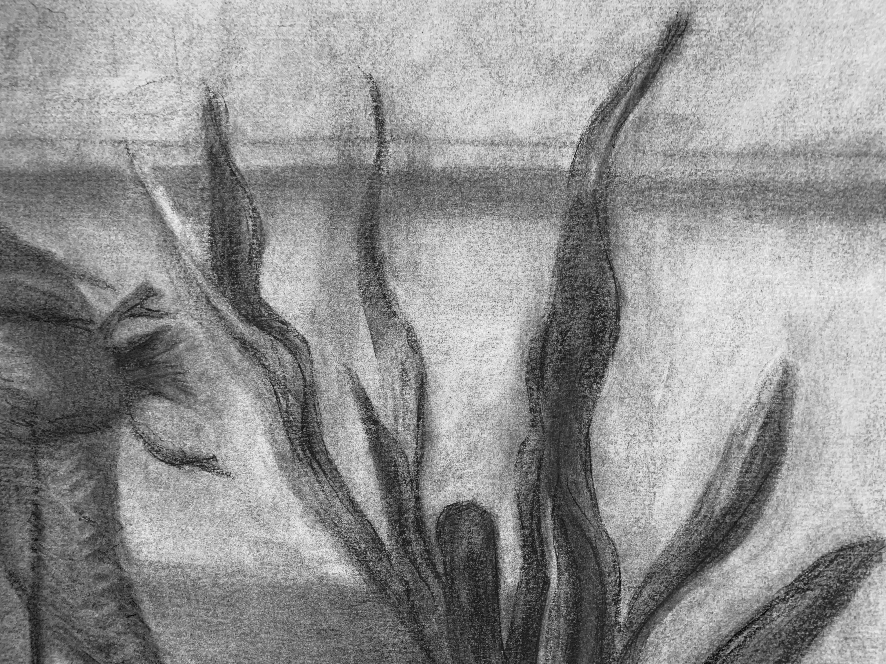
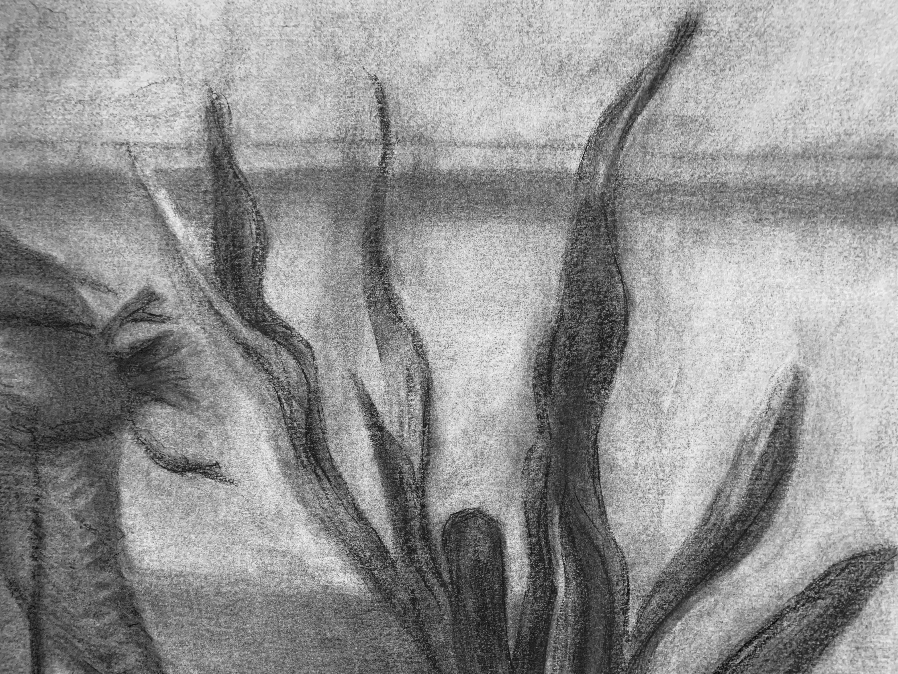

2020 is when I discovered the Photoshop brush, "stubby pencil." Surprisingly life changing. I'm currently working on comic-journalling and creating panels that evoke certain atmospheres.
Two weeks into January, I had drawn 100+ hours! I took RISD's Drawing Marathon, where I worked large (5ft x 7ft) for the first time. On top of that, this was my first time using charcoal. Seeing my progress over these two weeks was incredible. The act of drawing is so malleable and multidimensional and I'm working on embedding what I've learned into my making process.

(First: top left, final: bottom right) Not gonna lie, I sucked at first. Some notable moments was drawing a lot of the later drawings with my nondominant hand, drawing with both hands, and spending 80% of my time on rickety ladders, carving depth.
 

Some details from the fourth drawing.
A portrait of my sister, a Turner painting study in charcoal, and a cute lil' bird in the nature lab.
In the makings... the series I created as my final project for drawing marathon: how small things can make us feel small.